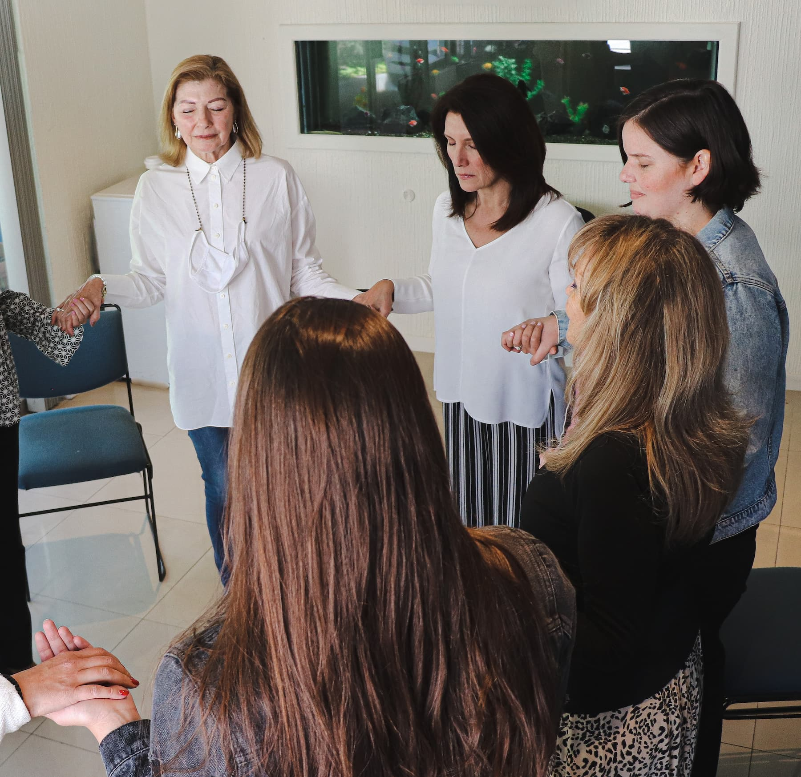
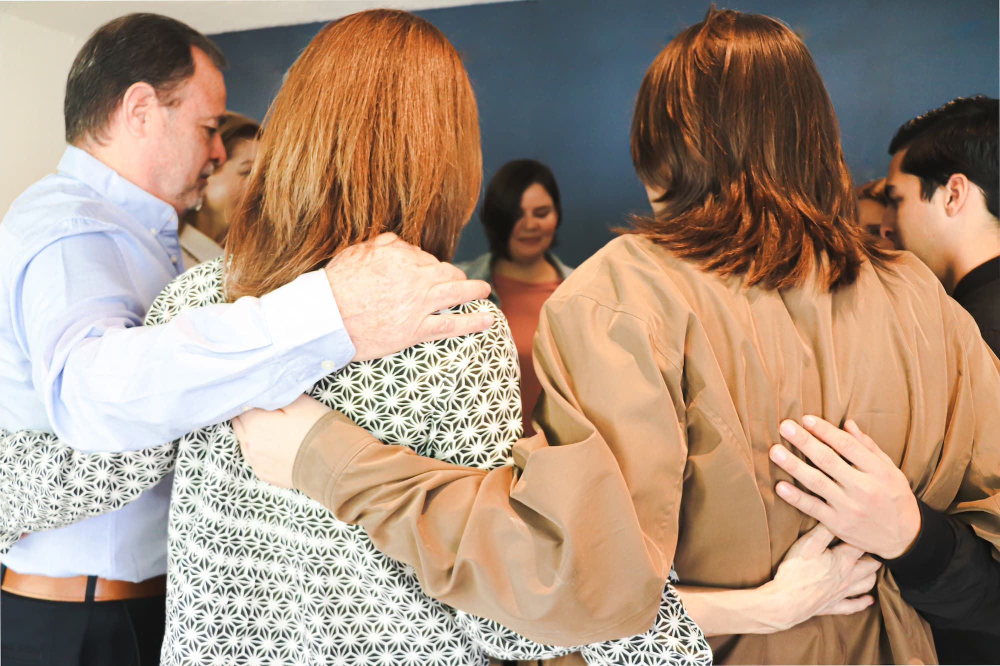
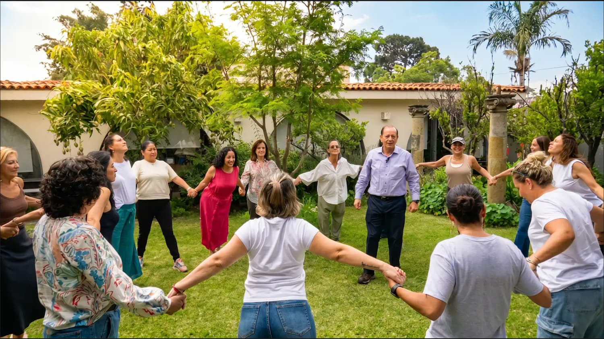
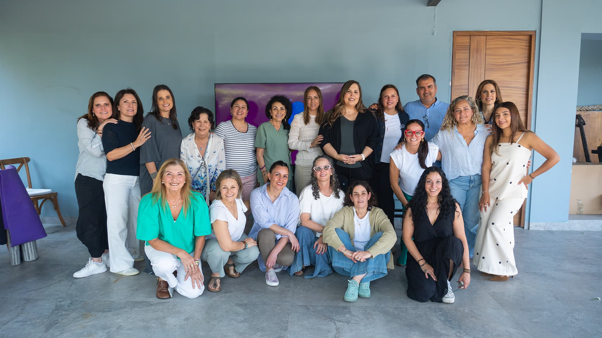
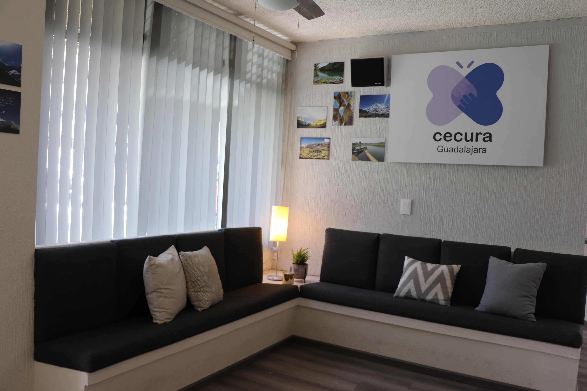
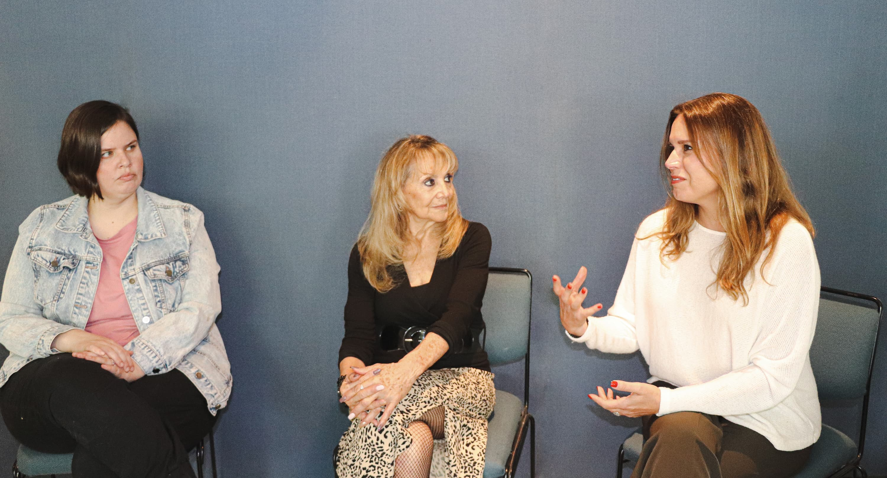

01
Mirada amorosa
Sustituir el miedo por el amor como elección consciente en la forma en que vemos a los demás y a nosotros mismos.
CECURA Guadalajara es un espacio de acompañamiento humano y emocional inspirado en la filosofía de Curación de Actitudes. Acompañamos procesos de duelo, crisis, adicción y crecimiento personal desde la escucha amorosa, la presencia y la conciencia.

Desde hace más de 30 años, CECURA ha acompañado a personas y familias en distintos procesos de vida, ofreciendo espacios de escucha, contención y crecimiento personal a través de grupos de apoyo, formación de facilitadores y actividades comunitarias.
Nuestro trabajo está dirigido a personas que atraviesan procesos de duelo, enfermedad, crisis emocionales, situaciones de adicción, pérdidas significativas o que simplemente buscan vivir con mayor paz y conciencia.
El método fue creado por el Dr. Gerald G. Jampolsky y surge de la comprensión de que el sufrimiento no proviene únicamente de las situaciones que vivimos, sino de la interpretación que hacemos de ellas. Propone transformar pensamientos basados en el miedo para elegir una mirada basada en el amor.
Sustituir el miedo por el amor como elección consciente en la forma en que vemos a los demás y a nosotros mismos.
Acompañar sin juicio, sostener desde la empatía y abrir espacios donde las personas se sientan verdaderamente escuchadas.
Aplicado internacionalmente en hospitales, escuelas, centros comunitarios y grupos de apoyo en todo el mundo.
Espacios de acompañamiento grupal desde una mirada de amor, paz y Curación de Actitudes. Pequeños círculos para sostener procesos juntos.
Formación integral en Curación de Actitudes para convertirse en facilitador. Incluye 50h de mentoría y 50h de servicio comunitario.
Encuentros temáticos para profundizar en los principios de Curación de Actitudes. Consulta el calendario actualizado.
Espacios personales de escucha amorosa y contención emocional para quienes lo necesitan en momentos específicos de su proceso.
Cada semana nos reunimos en pequeños círculos para sostener procesos de duelo, adicción, crisis emocionales y crecimiento personal. Así se ven nuestras sesiones grupales.





A través de doce principios sencillos y profundamente humanos, las personas desarrollan una mirada más consciente sobre sí mismas, sus relaciones y las experiencias que viven.
La esencia de nuestro ser es el amor y el amor es eterno.
Brindar espacios de acompañamiento humano y emocional desde la filosofía de Curación de Actitudes, promoviendo la paz interior, la escucha amorosa, la conciencia y el desarrollo humano en personas, familias y comunidades.
Ser un espacio de referencia en acompañamiento humano y formación de facilitadores, promoviendo una cultura de paz, amor, conciencia y servicio a través de la filosofía de Curación de Actitudes.
Llegué a CECURA buscando acompañamiento para un proceso de duelo y estudiar la tanatología a través de Curación de Actitudes transformó completamente mi percepción.
Este proceso me enseñó a vivir con presencia, amor y confianza. Cada sesión se convirtió en un espacio de reencuentro, escucha y reconstrucción amorosa.
El diplomado es mucho más que una formación académica; es un profundo viaje al interior de uno mismo y una invitación al autoconocimiento personal.
El diplomado coincidió con experiencias muy fuertes en mi vida y me ayudó a transitarlas en paz, comprendiendo el valor de la escucha amorosa y el acompañamiento consciente.
Curación de Actitudes me recordó la verdadera esencia del ser y cómo el acompañamiento desde el amor puede convertirse en un intercambio profundo de crecimiento y sanación.
Este proceso me enseñó que acompañar no es resolver, sino estar presente. Es una manera distinta de mirar, escuchar y acompañar la vida.
Si atraviesas un proceso difícil o quieres conocer alguno de nuestros espacios, acércate. Te recibimos sin juicio, desde la escucha amorosa.